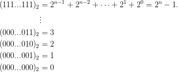
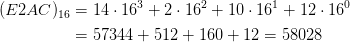

não tem representação finita, logo
(
não tem representação finita, logo
( )2≠3.
)2≠3.
Os computadores, em geral, usam a base binária para representar os números,
onde as posições, chamadas de bits, assume as condições “verdadeiro” ou
“falso”, ou seja, 0 ou 1. Cada computador tem um número de bits fixo
e, portanto, representa uma quantidade finita de números. Os demais
números são tomados por proximidade àqueles conhecidos, gerando erros de
arredondamento. Por exemplo, em aritmética de computador, o número 2 tem
representação exata, logo 22 = 4, mas não tem representação finita, logo
()2≠3.
Veja isso no Scilab:
Tipicamente um número inteiro é armazenado num computador como uma sequência de dígitos binários de comprimento fixo denominado registro.
Um registro com n bits da forma
| dn−1 | dn−2 |  | d1 | d0 |
Assim é possível representar números inteiros entre
 |
O bit mais significativo (o primeiro à esquerda) representa o sinal: por convenção, 0 significa positivo e 1 significa negativo. Um registro com n bits da forma
 |
representa o número (−1)s(d n−2...d1d0)2. Assim é possível representar números inteiros entre −2n−1 e 2n−1, com duas representações para o zero: (1000...000) 2 e (00000...000)2.
O bit mais significativo (o primeiro à esquerda) representa o coeficiente de −2n−1. Um registro com n bits da forma
|
|
representa o número −dn−12n−1 + (d n−2...d1d0)2.
Note que todo registro começando com 1 será um número negativo.
Exemplo 2.2.3. O registro com 8 bits [01000011] representa o número
O registro com 8 bits [10111101] representa o número
Note que podemos obter a representação de −67 invertendo os dígitos de 67 em binário e somando 1.
Exemplo 2.2.4. Em um registro com 8 bits, teremos os números
| (11111111)2 | = −27 + 26 +  + 2 + 1 = −1 | ||
 | |||
| (10000001)2 | = −27 + 1 = −127 | ||
| (10000000)2 | = −27 = −128 | ||
| (01111111)2 | = 26 +  + 2 + 1 = 127 + 2 + 1 = 127 | ||
 | |||
| (00000010)2 | = 2 | ||
| (00000001)2 | = 1 | ||
| (00000000)2 | = 0 | ||
O sistema de ponto fixo representa as partes inteira e fracionária do número com uma quantidade fixas de dígitos.
Exemplo 2.2.6. Em um computador de 32 bits que usa o sistema de ponto fixo, o registro
 d17d16,d15d14
d17d16,d15d14 d1d0)2 se o sinal for representado por um
dígito. Observe que nesse caso o zero possui duas representações
possíveis:
d1d0)2 se o sinal for representado por um
dígito. Observe que nesse caso o zero possui duas representações
possíveis:
 |
e
 |
 d1d0)2 se o sinal do
número estiver representado por uma implementação em complemento
de um. Observe que o zero também possui duas representações
possíveis:
d1d0)2 se o sinal do
número estiver representado por uma implementação em complemento
de um. Observe que o zero também possui duas representações
possíveis:
 |
e
|
|
 d17d16)2 − d31215 + (0,d
15d14
d17d16)2 − d31215 + (0,d
15d14 d1d0)2 se o sinal do número estiver
representado por uma implementação em complemento de dois. Nesse caso o
zero é unicamente representado por
d1d0)2 se o sinal do número estiver
representado por uma implementação em complemento de dois. Nesse caso o
zero é unicamente representado por
 |
Observe que 16 dígitos são usados para representar a parte fracionária, 15 são para representar a parte inteira e um dígito, o d31, está relacionado ao sinal do número.
Os números h = 6.626 × 10−34 e N A = 6.0221 × 1023 não podem ser armazenados na máquina em ponto fixo do exemplo anterior.
Entretanto, a constante
| h | = 6626 × 10−37 | ||
| h | = 6.626 × 10−34 | ||
| h | = 0.6626 × 10−33 | ||
| h | = 0.006626 × 10−31 |
Definição 2.2.1. Definimos que

Exemplo 2.2.8. Represente os números 0,0051 e 1205,4154 em um sistema de ponto fixo de 4 dígitos para a parte inteira e 4 dígitos para a parte fracionária. Depois represente os mesmos números utilizando notação normalizada com 7 dígitos significativos.
Solução. As representações dos números 0,0051 e 1205,4154 no sistema de ponto fixo são 0,0051 e 1205,4154, respectivamente. Em notação normalizada, as representações são 5,151515 ⋅ 10−3 e 1,205415 ⋅ 103, respectivamente. ♢
Observação 2.2.1. No Scilab, a representação em ponto flutuante com n dígitos é dada na forma ±d1,d2d3…dn × 10E. Consulte sobre o comando format!
O sistema de ponto flutuante não possui quantidade fixa de dígitos para as partes inteira e fracionária do número.
Podemos definir uma máquina F em ponto flutuante de dois modos:

Considere uma máquina com um registro de 64 bits e base β = 2. Pelo padrão IEEE754, 1 bit é usado para o sinal, 11 bits para o expoente e 52 bits são usados para o significando tal que


Em base 2 não é necessário armazenar o primeiro dígito (por quê?).
Por exemplo, o registro
![[0|100 0000 0000|1010 0000 0000...0000 0000]](main69x.png)

Uma maneira de representar os expoentes inteiros é deslocar todos eles uma mesma quantidade. Desta forma permitimos a representação de números negativos e a ordem deles continua crescente. O expoente é representado por um inteiro sem sinal do qual é deslocado o BIAS.
Tendo |E| dígitos para representar o expoente, geralmente o BIAS é predefinido de tal forma a dividir a tabela ao meio de tal forma que o expoente um seja representado pelo sequência [100...000].
Exemplo 2.2.9. Com 64 bits, pelo padrão IEEE754, temos que |E| := 11. Assim (100 0000 0000)2 = 210 = 1024. Como queremos que esta sequência represente o 1, definimos BIAS := 1023, pois

Com 32 bits, temos |E| := 8 e BIAS := 127. E com 128 bits, temos |E| := 15 e BIAS := 16383.
Com 11 bits temos
| [111 1111 1111] | = reservado | ||
| [111 1111 1110] | = 2046 − BIAS = 102310 = EMAX | ||
| = | |||
| [100 0000 0001] | = 210 + 1 − BIAS = 2 10 | ||
| [100 0000 0000] | = 210 − BIAS = 1 10 | ||
| [011 1111 1111] | = 1023 − BIAS = 010 | ||
| [011 1111 1110] | = 1022 − BIAS = −110 | ||
| = | |||
| [000 0000 0001] | = 1 − BIAS = −1022 = EMIN | ||
| [000 0000 0000] | = reservado |
O maior expoente é dado por EMAX = 1023 e o menor expoente é dado por EMIN = −1022.
O menor número representável positivo é dado pelo registro
![[0|000 0000 0001|0000 0000 0000...0000 0000]](main74x.png)
O maior número representável é dado por
![[0|111 1111 1110|1111 1111 ...1111 1111]](main76x.png)

O zero é um caso especial representado pelo registro
![[0|000 0000 0000|0000 0000 0000...0000 0000]](main78x.png)
Os expoentes reservados são usados para casos especiais:
Os números subnormais3 tem a forma

Observação 2.2.2. O menor número positivo, o maior número e o menor número subnormal representáveis no Scilab são:
Outras informações sobre a representação em ponto flutuante podem ser obtidas com help number_properties.
A precisão p de uma máquina é o número de dígitos significativos usado para representar um número. Note que p = |M| + 1 em binário e p = |M| para outras bases.
O epsilon de máquina, ϵmach = ϵ, é definido de forma que 1 + ϵ seja o menor número representável maior que 1, isto é, 1 + ϵ é representável, mas não existem números representáveis em (1, 1 + ϵ).
Exemplo 2.2.10. Com 64 bits, temos que o epsilon será dado por
| 1 | → (1.0000 0000....0000)2 × 20 | ||
| ϵ | → +(0.0000 0000....0001)2 × 20 = 2−52 | ||
| (1.0000 0000....0001)2 × 20≠1 |
Utilizando uma máquina em ponto flutuante temos um número finito de números que podemos representar.
Um número muito pequeno geralmente é aproximado por zero (underflow) e um número muito grande (overflow) geralmente faz o cálculo parar. Além disso, os números não estão uniformemente espaçados no eixo real. Números pequenos estão bem próximos enquanto que números com expoentes grandes estão bem distantes.
Se tentarmos armazenar um número que não é representável, devemos utilizar o número mais próximo, gerando os erros de arredondamento.
Por simplicidade, a partir daqui nós adotaremos b = 10.
Observação 2.2.3. O chamado modo de exceção de ponto flutuante é controlado pela função ieee. O padrão do Scilab é ieee(0). Estude os seguintes resultados das seguintes operações usando os diferentes modos de exceção: